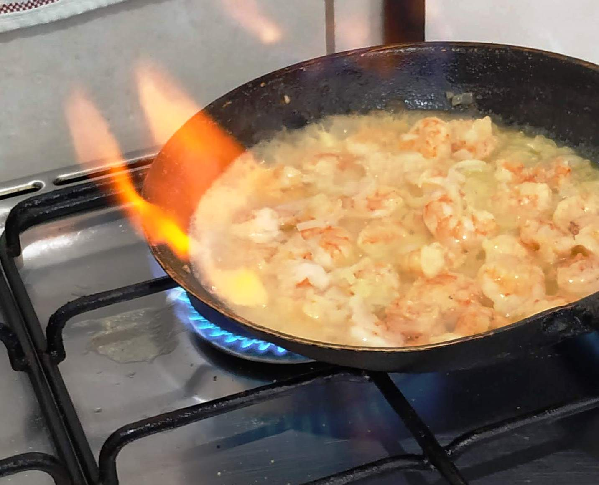
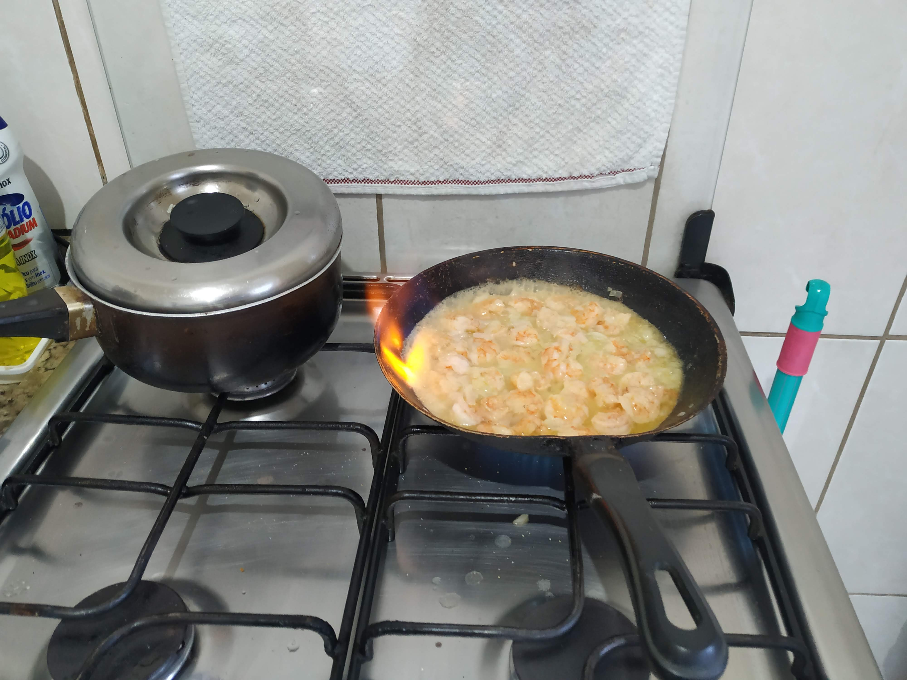

Strognoff de Camarão
Ingredientes
- 1/2 quilo de camarão médio limpo
- 1/2 colher (sopa) de Fondor Maggi®
- 1 pitada de pimenta-do-reino
- 1 colher (sopa) de azeite
- 1 colher (sopa) de manteiga
- 1 cebola média ralada
- 1/2 xícara (chá) de conhaque
- 100 g de champignons em conserva fatiados
- 2 colheres (sopa) de purê de tomate
- 1 colher (sopa) de mostarda
- 2 colheres (sopa) de ketchup
- 1 lata de creme de Leite
Modo de Preparo
Em um recipiente, tempere os camarões com o Fondor Maggi® e a pimenta-do-reino. Em uma frigideira, aqueça o azeite, jogue os camarões e refogue, aos poucos, em fogo alto. Retire os camarões da frigideira e coloque a manteiga e a cebola. Doure a cebola, junte os camarões e despeje o conhaque, espere aquecer e incline levemente a frigideira para flambar o conhaque. Aguarde acabar a chama.
Junte os champignons, tampe a frigideira e deixe por alguns minutos.
Acrescente o purê de tomate, a mostarda, o ketchup e misture bem.
Abaixe o fogo, deixe por cerca de 5 minutos com a frigideira tampada.
Para finalizar incorpore delicadamente o creme de leite e sirva.


